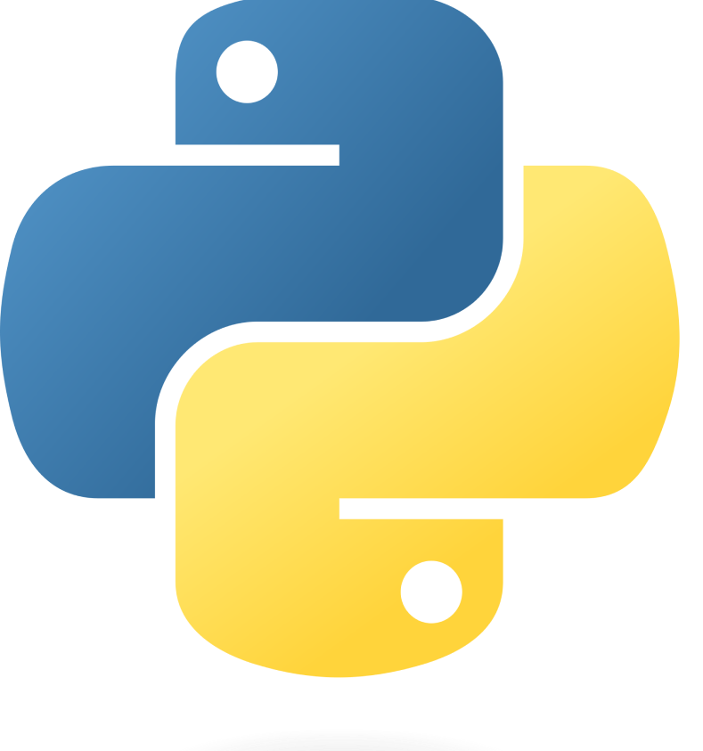

BACK-END

Um desenvolvedor back-end é um profissional de tecnologia da informação responsável pela criação e manutenção da parte "invisível" de um aplicativo ou site, que lida com o processamento de dados, lógica de negócios e interações com o servidor. Eles são fundamentais para garantir que os sistemas funcionem de maneira eficiente e segura. Aqui estão as principais responsabilidades e tecnologias associadas a um desenvolvedor back-end:
CURSOS RECOMENDADOS
